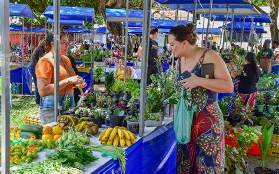
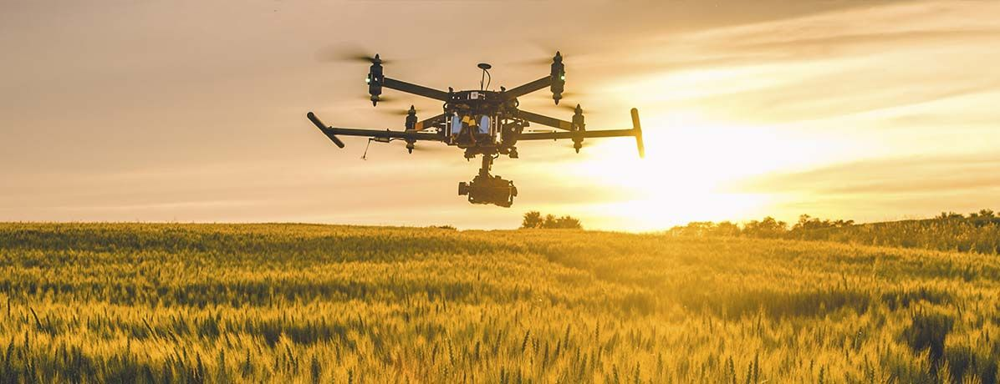
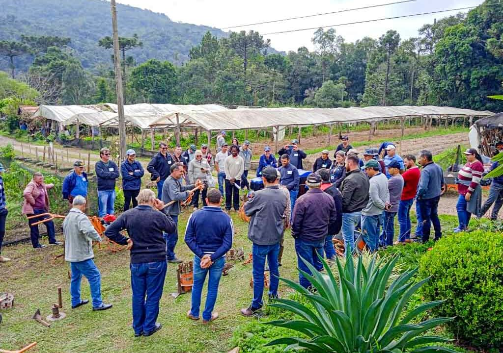
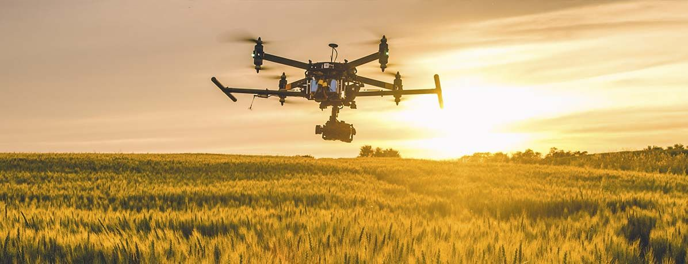
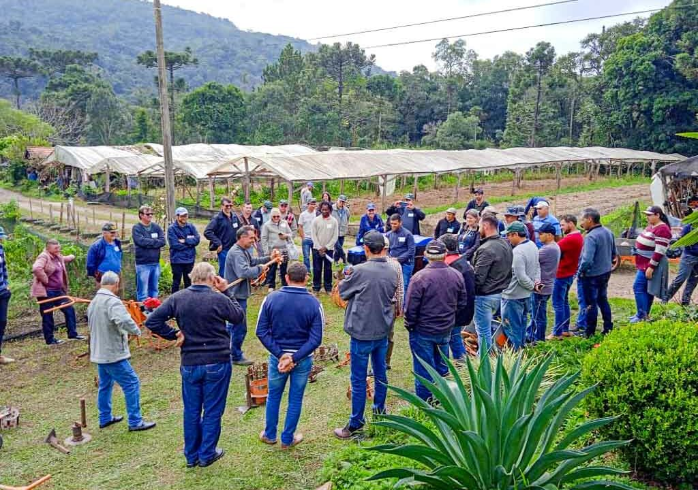
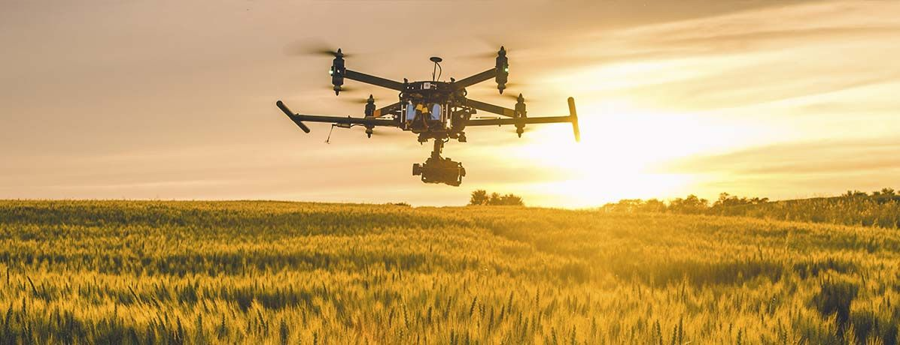
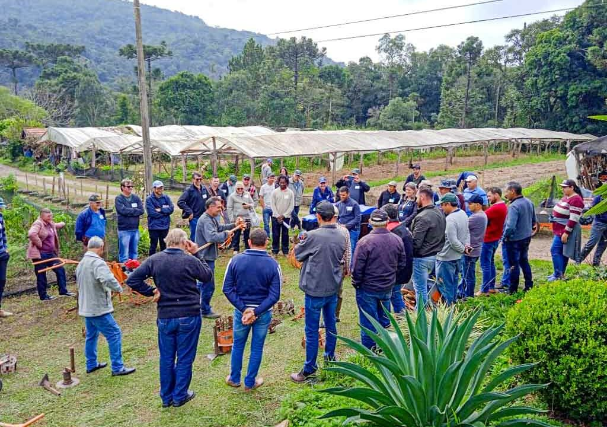
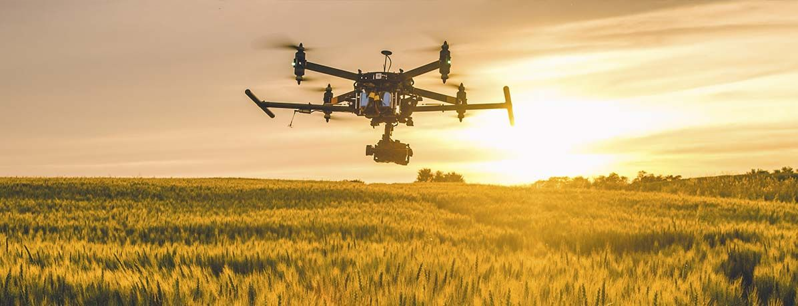
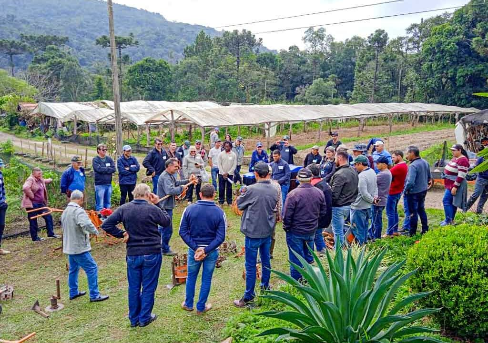

Galeria de Imagens

 





O projeto "Festejando a Conexão Campo-Cidade" celebra as trocas culturais, econômicas e sociais entre dois mundos que se complementam. O campo fornece alimentos, tradições e saberes, enquanto a cidade contribui com inovação, consumo e novas oportunidades.
Dona Maria, produtora de hortaliças, envia seus produtos frescos toda semana para a feira da cidade. Já João, jovem da cidade, criou um app para ajudar produtores rurais a organizarem suas vendas. São exemplos reais de como essa conexão gera desenvolvimento e inclusão.
Receitas tradicionais do campo ganham espaço nas mesas urbanas. Do pão caseiro ao queijo artesanal, cada alimento carrega cultura, história e afeto. Valorizar produtos locais é fortalecer a economia e preservar tradições.
A tecnologia aproxima o campo da cidade. Drones, sensores de solo e agricultura de precisão estão transformando a produção rural. Jovens urbanos e rurais desenvolvem soluções sustentáveis juntos, mostrando que inovação e tradição podem andar lado a lado.
Feiras agroecológicas, visitas escolares ao campo, oficinas de culinária e mostras culturais são exemplos de eventos que fortalecem o vínculo entre o urbano e o rural. Esses momentos de encontro promovem aprendizado, valorização e respeito mútuo.

